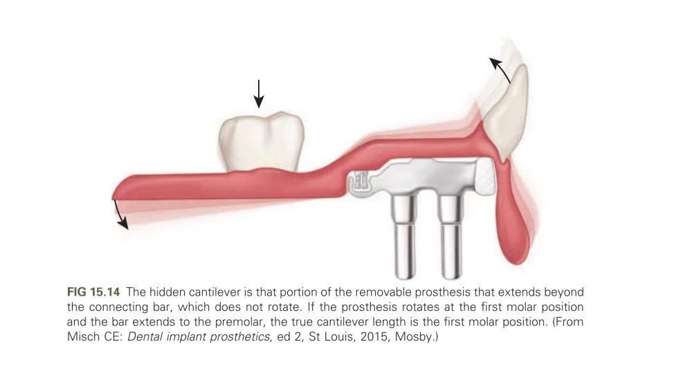
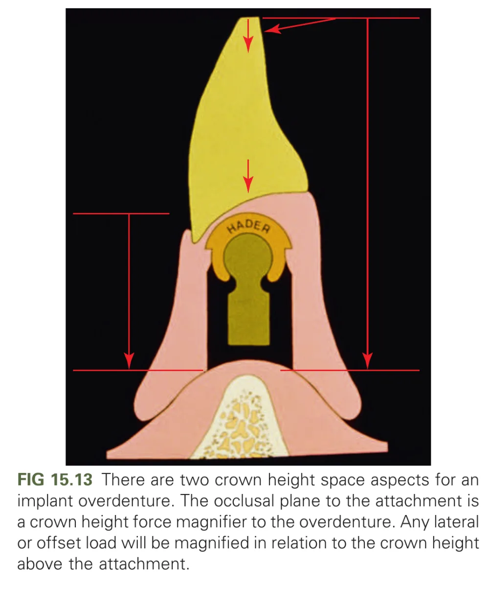
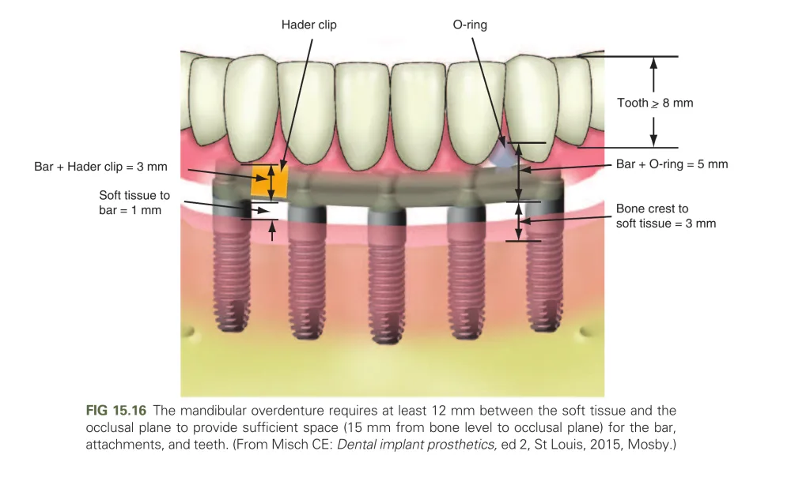

نسخه استخراجشده؛ ترجمه یا تأیید علمی انجام نشده است. وضعیت: captured
مفهوم «کانتیلور پنهان» در ۱۹۹۳ مطرح شد و چنین تعریف میشود: «بخشی از پروتز متحرک که فراتر از آخرین ایمپلنت یا بار متصلکننده امتداد مییابد.»
و چهار پیامدش: نبود ساپورت برای پروتز، سایش بیش از حد اتچمنتها، افزایش تنش بر رابط بار-ایمپلنت، و احتمال شکست پروتز.
و اکنون ظریفترین بخش، که تشخیص را دشوار میکند: «در بسیاری از این موارد، سیستم اتچمنت ساییده نمیشود، چون پروتز متحرک PM-0 است (یعنی هیچ حرکت پروتزی ندارد)؛ با این حال، نیروهای بیش از حد حاصل، پروتز، پیچهای اباتمنت و استخوان مارجینال را در معرض خطر قرار میدهند.»
پس نشانهی هشدار معمول — ساییدگی اتچمنت — اینجا غایب است. سیستم آرام به نظر میرسد در حالی که پیچ و استخوان زیر فشارند. اینجا نبودِ یک نشانه، خودش نشانه است.
و اتیولوژی — چرا اصلاً پدید میآید:
«اگر بار یا اتچمنت درست طراحی نشده باشد، پروتز متحرک در انتهای ایمپلنت یا بار نمیچرخد تا بافت نرم را بار کند. نتیجه یک «کانتیلور پنهان» است.»
و مثالی که تعریف عملی را میسازد:
«اگر یک بار کانتیلورشده تا پرمولر دوم امتداد یابد، ولی نیروهای وارد بر مولر دوم ترمیم به حرکت ترمیم نینجامند — یعنی حرکت خلفی-تحتانی و قدامی-فوقانی — آنگاه کانتیلور تا موقعیت مولر دوم امتداد دارد.»
و قاعدهی سنجش، که کل این درس را در یک جمله جمع میکند: «طول کانتیلور تا نقطهی PM اندازهگیری میشود، نه تا انتهای بار و سیستم اتچمنت.»
یعنی: در یونیت پیش، کانتیلور را روی بار میسنجیدیم و اعداد ۸ و ۱۰ میلیمتر را بهکار میبردیم. اینجا روشن میشود که آن اندازهگیری میتواند گمراهکننده باشد — چون اگر پروتز نچرخد، کانتیلور واقعی تا هرجایی که پروتز امتداد دارد ادامه مییابد.
و پیشگیری، دو بخش دارد:
و اینجا دو درس به هم گره میخورند: کانتیلور پنهان یک مسئلهی هندسی به نظر میرسد، ولی ریشهاش در طبقهبندی PM درس پیش است. اگر ندانی پروتزت PM چند است، نمیتوانی بدانی کانتیلورت چقدر است.

عارضهی بعدی: فضای ارتفاع تاج ناکافی. و پیامدش روشن است: «وقتی CHS کافی نباشد، پروتز مستعدتر به خستگی و شکست اجزا است و عوارض بیشتری در مقایسه با پروتزهای ثابت پرسلن-متال دارد.»
و اعداد فضایی — که با اعداد یونیت پیش تفاوتهای ظریفی دارند:
و تفکیک اجزا (شکل ۱۵٫۱۶): دندان ≥ ۸ میلیمتر، بار + کلیپ هِیدر = ۳ میلیمتر، بار + O-ring = ۵ میلیمتر، بافت نرم تا بار = ۱ میلیمتر، کرست استخوان تا بافت نرم = ۳ میلیمتر. مجموع: دستکم ۱۲ میلیمتر از بافت نرم و ۱۵ میلیمتر از سطح استخوان تا صفحهی اکلوزال.
و قاعدهی انتخاب اتچمنت در فضای کم: «کمپروفایلترین اتچمنت ممکن باید در وضعیتهای CHS کاهشیافته به کار رود» — تا در کانتور ترمیم جا شود، حجم بیشتری از رزین آکریلیک برای کاهش شکست فراهم کند، و موقعیت درست دندان دنچر را بدون تضعیف گیر و استحکام بیس رزینی ممکن سازد.
و راهحل جراحی: «یک پروسیجر استئوپلاستی برای افزایش CHS پیش از جایگذاری ایمپلنت اغلب اندیکاسیون دارد، بهویژه وقتی ارتفاع و عرض فراوان استخوان موجود است.»
و اگر CHS تأمین نشود، یک راه خروج دیگر هست: «CHS باید پیش از جایگذاری ایمپلنت ارزیابی و درست طرحریزی شود. در غیر این صورت، باید یک ترمیم ثابت پرسلن-متال در نظر گرفته شود.» — یعنی نبود فضا میتواند تصمیم متحرک/ثابت را وارونه کند.
و اکنون مهمترین مفهوم این اسلاید: در اوردنچر ایمپلنتی دو فضای ارتفاع تاج وجود دارد، نه یکی.
ارتفاع اول یک بزرگکنندهی نیرو است. «ارتفاع صفحهی اکلوزال تا اتچمنت، با هر نیروی جانبی یا کانتیلورشده، یک بزرگکنندهی نیرو برای اوردنچر است.»
و عددش: «اگر ارتفاع تاج را دو برابر کنی، نیرو ۲۰۰ درصد افزایش مییابد.»
و یک پیامد طراحی که مستقیماً از این بیرون میآید: «وقتی یک اتچمنت مستقیماً به ایمپلنت متصل میشود، ارتفاع تاجِ بالای اتچمنت بیشتر است از وقتی که اتچمنت روی یک بار قرار میگیرد. بنابراین اتچمنت ایمپلنت منفرد، ارتفاع تاج بیشتری بالای اتچمنت و نیروی جانبی بیشتری به پروتز دارد. در نتیجه، اوردنچر کمپایدارتر است.»
پس توصیهی استاندارد: «هر وقت ممکن باشد، ایمپلنت باید با یک بار متصل شود و اتچمنت روی بار قرار گیرد. چرخش پروتز باید تا حد عملی از استخوان دور باشد.» — اما باید دستکم ۲ میلیمتر یا بیشتر فضای آکریلیک میان اتچمنت و دندانهای دنچر بماند تا حجم کافی ماده برای کاهش شکست پروتز یا جدا شدن دندانها فراهم شود.
و ارتفاع دوم — از اتچمنت تا استخوان — یک عدد تصمیم میسازد:
«هرچه فاصلهی اتچمنت تا سطح استخوان بیشتر، نیروی بیشتری بر پیچ اباتمنت ایمپلنت، استخوان مارجینال و رابط استخوان-ایمپلنت با هر بار جانبی وارد میشود.»
و آستانهی صریح: «وقتی فاصلهی ارتفاع اتچمنت تا استخوان بیش از ۷ میلیمتر باشد، ایمپلنتها باید به هم اسپلینت شوند تا ریسک عارضهی سیستم ایمپلنت کاهش یابد.»
این دو ارتفاع را با هم اشتباه نگیر: اولی تعیین میکند نیرو چقدر بزرگ میشود؛ دومی تعیین میکند آیا باید اسپلینت کنی یا نه. و یک راهحل به هر دو پاسخ میدهد: اتچمنت روی بار، ارتفاع بالای اتچمنت را کم و چرخش را از استخوان دور میکند، و خودِ بار ایمپلنتها را به هم اسپلینت میکند. سقف بالا بردن اتچمنت، دستکم ۲ میلیمتر آکریلیک میان اتچمنت و دندانهای دنچر است.

